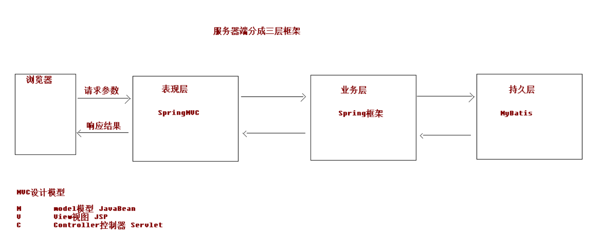
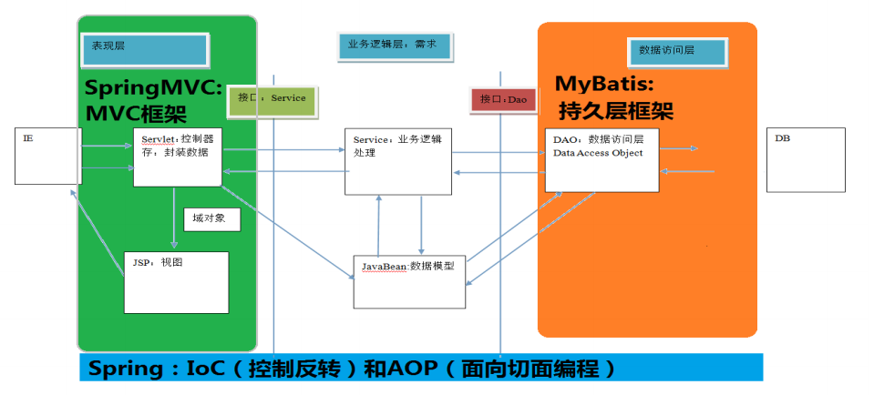
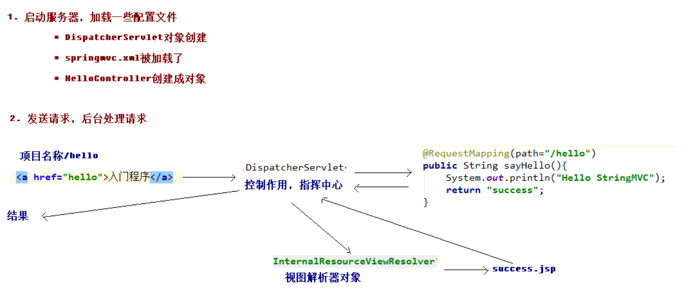
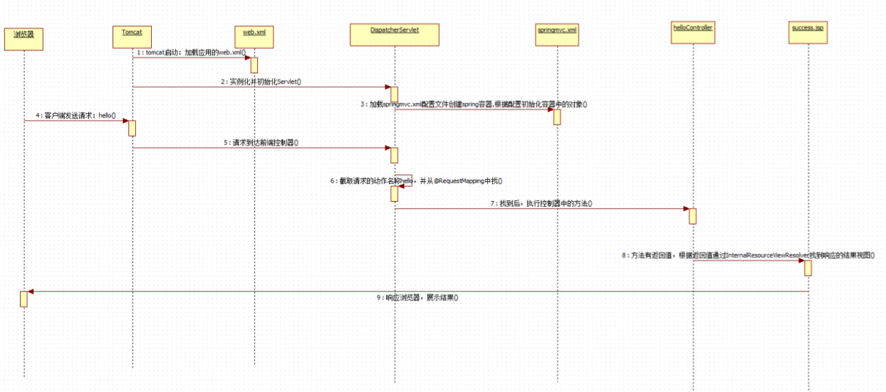

介绍springMVC的概念，并且建立快速入门案例。
SpringMVC 的基本概念
关于三层架构和MVC
三层架构
我们的开发架构一般都是基于两种形式，一种是 C/S 架构，也就是客户端/服务器，另一种是 B/S 架构，也就是浏览器服务器。在 JavaEE 开发中，几乎全都是基于 B/S 架构的开发。那么在 B/S 架构中，系统标准的三层架构包括：表现层、业务层、持久层。三层架构在我们的实际开发中使用的非常多，所以我们课程中的案例也都是基于三层架构设计的。

三层架构中，每一层各司其职，接下来我们就说说每层都负责哪些方面：
表现层：
也就是我们常说的web层。它负责接收客户端请求，向客户端响应结果，通常客户端使用http协议请求web层，web需要接收http请求，完成http响应。
表现层包括展示层和控制层：控制层负责接收请求，展示层负责结果的展示。
表现层依赖业务层，接收到客户端请求一般会调用业务层进行业务处理，并将处理结果响应给客户端。
表现层的设计一般都使用MVC模型。（MVC是表现层的设计模型，和其他层没有关系）
业务层：
也就是我们常说的 service 层。它负责业务逻辑处理，和我们开发项目的需求息息相关。web 层依赖业务层，但是业务层不依赖 web 层。
业务层在业务处理时可能会依赖持久层，如果要对数据持久化需要保证事务一致性。（也就是我们说的，事务应该放到业务层来控制）
持久层：
- 也就是我们是常说的 dao 层。负责数据持久化，包括数据层即数据库和数据访问层，数据库是对数据进行持久化的载体，数据访问层是业务层和持久层交互的接口，业务层需要通过数据访问层将数据持久化到数据库中。通俗的讲，持久层就是和数据库交互，对数据库表进行增删改查
MVC 模型
MVC 全名是 Model View Controller，是模型(model)－视图(view)－控制器(controller)的缩写，是一种用于设计创建 Web 应用程序表现层的模式。MVC 中每个部分各司其职：
Model（模型）：通常指的就是我们的数据模型。作用一般情况下用于封装数据。
View（视图）：通常指的就是我们的 jsp 或者 html。作用一般就是展示数据的。通常视图是依据模型数据创建
Controller（控制器）：是应用程序中处理用户交互的部分。作用一般就是处理程序逻辑的。
- 它相对于前两个不是很好理解，这里举个例子：我们要保存一个用户的信息，该用户信息中包含了姓名，性别，年龄等等。这时候表单输入要求年龄必须是 1~100 之间的整数。姓名和性别不能为空。并且把数据填充到模型之中。此时除了 js 的校验之外，服务器端也应该有数据准确性的校验，那么校验就是控制器的该做的。当校验失败后，由控制器负责把错误页面展示给使用者。如果校验成功，也是控制器负责把数据填充到模型，并且调用业务层实现完整的业务需求。
SpringMVC 概述
SpringMVC 是什么
SpringMVC是一种基于Java的实现MVC设计模型的请求驱动类型的轻量级Web框架，属于Spring FrameWork的后续产品，已经融合在Spring Web Flow里面。Spring框架提供了构建Web应用程序的全功能MVC模块。使用Spring可插入的MVC架构，从而在使用Spring进行WEB开发时，可以选择使用Spring的Spring MVC框架或集成其他MVC开发框架，如Struts1(现在一般不用)，Struts2等。SpringMVC已经成为目前最主流的MVC框架之一，并且随着Spring3.0的发布，全面超越 Struts2，成为最优秀的MVC框架。它通过一套注解，让一个简单的Java类成为处理请求的控制器，而无须实现任何接口。同时它还支持RESTful编程风格的请求。
SpringMVC 在三层架构的位置

SpringMVC 的优势
清晰的角色划分：
- 前端控制器（DispatcherServlet）
- 请求到处理器映射（HandlerMapping）
- 处理器适配器（HandlerAdapter）
- 视图解析器（ViewResolver）
- 处理器或页面控制器（Controller）
- 验证器（ Validator）
- 命令对象（Command 请求参数绑定到的对象就叫命令对象）
- 表单对象（Form Object 提供给表单展示和提交到的对象就叫表单对象）。
分工明确，而且扩展点相当灵活，可以很容易扩展，虽然几乎不需要。
由于命令对象就是一个 POJO，无需继承框架特定 API，可以使用命令对象直接作为业务对象。
和 Spring 其他框架无缝集成，是其它 Web 框架所不具备的。
可适配，通过
HandlerAdapter可以支持任意的类作为处理器。可定制性，
HandlerMapping、ViewResolver等能够非常简单的定制。功能强大的数据验证、格式化、绑定机制。
利用 Spring 提供的
Mock对象能够非常简单的进行 Web 层单元测试。本地化、主题的解析的支持，使我们更容易进行国际化和主题的切换。
强大的 JSP 标签库，使 JSP 编写更容易。
还有比如
RESTful风格的支持、简单的文件上传、约定大于配置的契约式编程支持、基于注解的零配置支持等
SpringMVC 和 Struts2 的优略分析
共同点
- 它们都是表现层框架，都是基于 MVC 模型编写的。
- 它们的底层都离不开原始 ServletAPI。
- 它们处理请求的机制都是一个核心控制器。
区别
Spring MVC 的入口是 Servlet, 而 Struts2 是 Filter
Spring MVC 是基于方法设计的，而 Struts2 是基于类，Struts2 每次执行都会创建一个动作类。所以 Spring MVC 会稍微比 Struts2 快些。
Spring MVC 使用更加简洁,同时还支持 JSR303, 处理 ajax 的请求更方便
JSR303 是一套 JavaBean 参数校验的标准，它定义了很多常用的校验注解，我们可以直接将这些注解加在我们 JavaBean 的属性上面，就可以在需要校验的时候进行校验了。
Struts2 的 OGNL 表达式使页面的开发效率相比 Spring MVC 更高些，但执行效率并没有比 JSTL 提升，尤其是 struts2 的表单标签，远没有 html 执行效率
SpringMVC 的入门
先贴入门案例，在分析：
入门源码：
webapp
web.xml的配置文件：
<!DOCTYPE web-app PUBLIC
"-//Sun Microsystems, Inc.//DTD Web Application 2.3//EN"
"http://java.sun.com/dtd/web-app_2_3.dtd" >
<web-app>
<display-name>Archetype Created Web Application</display-name>
<servlet>
<servlet-name>SpringMVCDispatcherServlet</servlet-name>
<servlet-class>
org.springframework.web.servlet.DispatcherServlet
</servlet-class>
<!-- 配置初始化参数,用于读取 SpringMVC 的配置文件 -->
<init-param>
<param-name>contextConfigLocation</param-name>
<param-value>classpath:springMVC.xml</param-value>
</init-param>
<!-- 配置 servlet 的对象的创建时间点:应用加载时创建。
取值只能是非 0 正整数,表示启动顺序 -->
<load-on-startup>1</load-on-startup>
</servlet>
<servlet-mapping>
<servlet-name>SpringMVCDispatcherServlet</servlet-name>
<url-pattern>/</url-pattern>
</servlet-mapping>
</web-app>index.jsp
<%--
Created by IntelliJ IDEA.
User: zhangkx
Date: 2020/4/20
Time: 下午6:10
To change this template use File | Settings | File Templates.
--%>
<%@ page contentType="text/html;charset=UTF-8" language="java" %>
入门
进入controller
pages中 的跳转success.jsp
<%--
Created by IntelliJ IDEA.
User: zhangkx
Date: 2020/4/20
Time: 下午6:09
To change this template use File | Settings | File Templates.
--%>
<%@ page contentType="text/html;charset=UTF-8" language="java" %>
Title
success!!!!
resource
springMVC.xml配置文件
<?xml version="1.0" encoding="UTF-8"?>
<beans xmlns="http://www.springframework.org/schema/beans"
xmlns:mvc="http://www.springframework.org/schema/mvc"
xmlns:context="http://www.springframework.org/schema/context"
xmlns:xsi="http://www.w3.org/2001/XMLSchema-instance"
xsi:schemaLocation="http://www.springframework.org/schema/beans
http://www.springframework.org/schema/beans/spring-beans.xsd
http://www.springframework.org/schema/mvc
http://www.springframework.org/schema/mvc/spring-mvc.xsd
http://www.springframework.org/schema/context
http://www.springframework.org/schema/context/spring-context.xsd">
<!-- 配置创建 spring 容器要扫描的包 -->
<context:component-scan base-package="uestc.zhangkx"/>
<!-- 配置视图解析器 -->
<bean id="internalResourceViewResolver" class="org.springframework.web.servlet.view.InternalResourceViewResolver">
<property name="prefix" value="/WEB-INF/pages/"/>
<property name="suffix" value=".jsp"/>
</bean>
</beans>controller
package uestc.zhangkx.controller;
import org.springframework.stereotype.Controller;
import org.springframework.web.bind.annotation.RequestMapping;
@Controller
public class HelloController {
@RequestMapping("/hello")
public String sayHello() {
System.out.println("HelloController 的 sayHello 方法执行了。。。。");
return "success";
}
}简单分析
先看看执行流程：

说的很明白了，大致可以分为下面几步：
- 当启动Tomcat服务器的时候,因为配置了
load-on-startup标签,所以会创建DispatcherServlet对象,
就会加载springmvc.xml配置文件 - 开启了注解扫描,那么
HelloController对象就会被创建 - 从
index.jsp发送请求,请求会先到达DispatcherServlet核心控制器,根据配置@RequestMapping注解
找到执行的具体方法 - 根据执行方法的返回值,再根据配置的视图解析器,去指定的目录下查找指定名称的JSP文件
- Tomcat服务器渲染页面,做出响应
